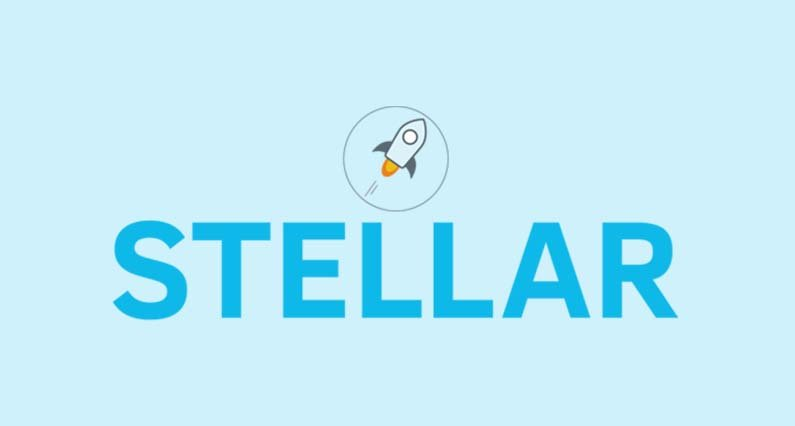
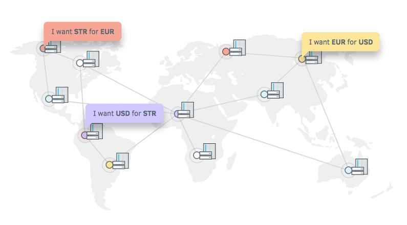
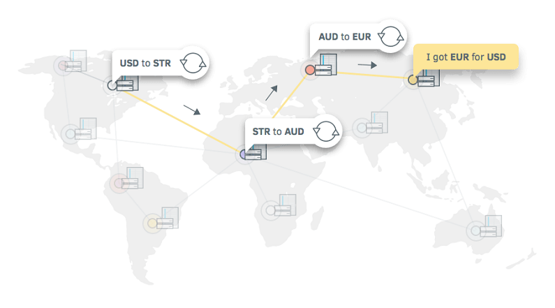

Mi az a Stellar Lumens? Útmutató kezdőknek
Stellar egy nyílt forráskódú, megosztott fizetési infrastruktúra. Stellar technológiája összeköti az embereket, fizetési intézményeket és bankokat. Célja, hogy megkönnyítse a devizaváltást és pénzügyi tranzakciókat gyorsan, megbízhatóan és centek töredékéért. Mindezt a Lumen (XLM) kriptopénz segítségével.
Stellar a hálózat neve, aminek kriptovalutáját nevezik Lumen-nek (XLM). Ezek összességét pedig a Stellar.org non profit szervezet felügyeli.
Stellar-t 2014-ben hozta létre Jed McCaleb. Ő volt az aki pár évvel azelőtt Ripple-t is létrehozta, de miután nézeteltérése támadt a Ripple többi alapítóival otthagyta a vállalatot. Amíg Ripple a bankoknak segít a pénzügyek felgyorsításában addig Stellar a kis emberek közötti tranzakciókat szeretné megkönnyíteni.
Rendszerük lehetővé tenné, hogy a tranzakciók olcsóbbak, gyorsabbak és megbízhatóbbak legyenek mint a jelenlegi rendszer. Ezen felül még a határon túli utalásokat szeretnék hatékonyabbá tenni.
Stellar működése
Mint megannyi kriptovaluta, Stellar is decentralizált elven, blokklánc technológiával működik.
A Stellar rendszer egy decentralizált szerver hálózaton működik. Ezek a szerverek tárolják a megosztott főkönyvet amely a hálózat adatait és tranzakcióit tartalmazza.
Gyakorlatban Stellar egy elérhetőbb, rugalmasabb PayPal-ként fog funkcionálni. Feltöltöd a devizádat egy megbízott pénzügyi intézménynek, ilyenek lehetnek például a bankok, Neteller, Skrill vagy PayPal. Ezek az intézmények úgymond pénzügyi keretet adnak a befizetett összegedért a virtuális pénztárcádon. Csakúgy mint PayPal számlád esetében.
Ezek az intézmények hídként szolgálnak az adott deviza és a Stellar hálózat között.
A virtuális tárcádban lévő összeget elküldheted bárkinek a hálózaton. Stellar-nak van egy megosztott deviza váltója is amely automatikusan átváltja a legjobb árfolyamon.
Tegyük fel, hogy egy barátodnak szeretnél pénzt küldeni aki Németországban él. Használhatod a forint alapú számládat, hogy pénzt küldj neki. A Stellar hálózat ezt automatikusan átváltaná, a legjobb árfolyamon amit a hálózatban kínálnak. Barátod ezt az összeget Euróban kapná meg a számlájára.
Előnye a jelenlegi rendszerhez képest, hogy az összes pénzügyi intézmény egy és ugyanazon a hálózaton lenne, tehát megkönnyítené a pénzintézménynek közötti tranzakciókat.
Megosztott deviza váltó
A Stellar főkönyv képes deviza váltási ajánlatokat is tárolni. Ezeknek a váltási árfolyamai előre meg vannak határozva az úgynevezett rendelési könyvben, azon személy által aki leadja a rendelést. Tehát ezek az ajánlatok nem vonatkoznak az automatikus váltásra mint a személyes tranzakciók. Stellar főkönyve a deviza váltási ajánlatok világpiacává válhat.
Fontos megjegyezni, hogy ez a deviza váltó nem korlátozott hagyományos valutára. Hagyományos és kriptovaluta kereskedési párokat is ajánlhat valaki.
Több devizás tranzakciók
Ahogy korábban említettük Stellar-al banki szolgáltatások nehézségei, vagy pénzváltás nélkül intézhetsz utalásokat.
Ahhoz, hogy ezt elérje három dolgot tehet a rendszer:
Devizaváltás egy ajánlaton keresztül
Stellar átváltja a devizát a rendelési könyvben szereplő ajánlatokkal és automatikusan végrehajtja a devizaváltást.
Lumen-ek használata mint közvetítő
Euróról, forintra való váltásnál a Stellar rendszer olyan ajánlatokat keres ahol lumeneket adnak euróért. Ezzel egy időben olyan ajánlatokat keres ahol forintot adnak lumenekért. A hálózat elvégzi ezeket a devizaváltásokat és jóváírja a fogadó fél számláján.
Több devizaváltás egymás után
Ha nincsen átváltási pár a két valutához, akkor a Stellar hálózat olyan ajánlatok után néz ami egy deviza váltási lánc folyamán át tudja váltani az óhajtott devizára. Például: EUR -> USD, USD -> GBP, GBP -> BTC, BTC -> HUF.
Ez a több devizaváltás egymás után meglehetősen találékony, és nagyon rugalmas lehetőséget biztosít a felhasználóknak, hogy valutát cseréljenek globális mértékben.
Lumen-ek
Stellar Lumen-ek (XLM) a kriptovaluta amelyet a Stellar hálózat használ. Amikor a hálózatot létrehozták 100 milliárd darabot bocsátottak ki. Eredetileg Stellar névre hallgatott ez a kriptopénz azonban később megváltoztatták, hogy könnyen megkülönböztethető legyen a Stellar hálózat és a Stellar.org non profit alapítványtól.
Egy Lumen tranzakció 0.00001 XLM-be kerül, ami csak centek töredéke és általában nem telik 6 másodpercnél többe. Stellar készlete évente 1%-al növekszik.
Stellar Lumens vásárlás és tárolás
Legegyszerűbb módja ha először Bitcoin-t vagy Ethereum-ot vásárolsz Megteheted ezt Coinbase vagy BitPanda-án. Ezután többek között Binance vagy Bitfinex segítségével cserélheted Bitcoin-t Stellar Lumen-ekre. Bitcoin vagy Ethereum beszerzése után Binance és Bitfinex oldalon részletes útmutatót találsz hogyan válthatod kriptovalutádat egy másikra.
Stargazer és Stellar Desktop Client népszerű választás, ha egy ingyenes szoftver vagy mobil tárcára van szükség. Stronghold egy megosztott kriptovaluta váltó amely a Stellar rendszerébe van építve, jelenleg Bitcoin-t Ethereum-ot és Lumeneket támogat. StellarTerm pedig egy web alapú kliens amely segítségével hozzáférhetsz a deviza váltóhoz ahol tudsz kereskedni. Ezek mind web tárcaként is funkcionálnak.
Hardver tárcák közül a Ledger Nano S támogatja jelenleg a Stellar Lumen-eket.
Végszó
Stellar képes mikró tranzakciókat kezelni gyakorlatilag jelentéktelen díjakért, utalásokat intézni anélkül, hogy bankkal vagy deviza váltóval kellene bajlódni. Mindezt valós idejű tranzakciókkal pár másodperc alatt. Stellar olyan neves cégekkel áll partneri kapcsolatban mint IBM vagy KlickEx amely bizakodást kínál a jövőre nézve.


2018. Január 18.